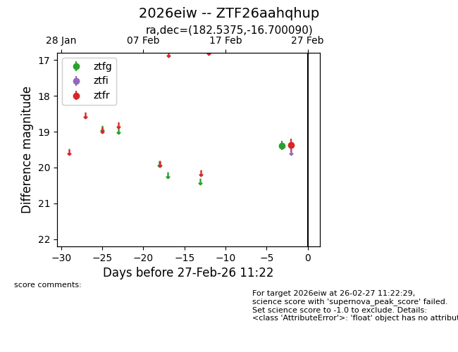
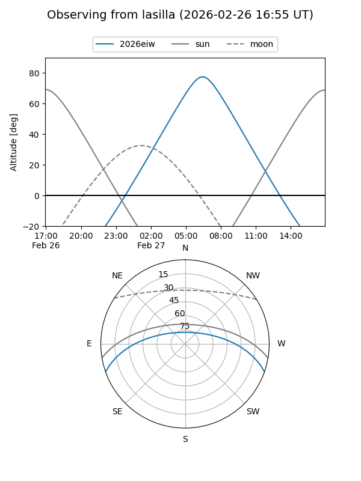
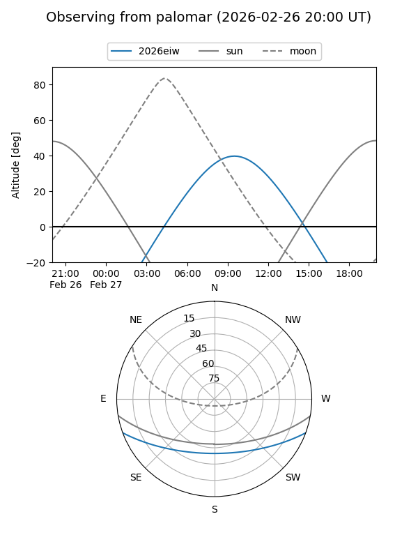
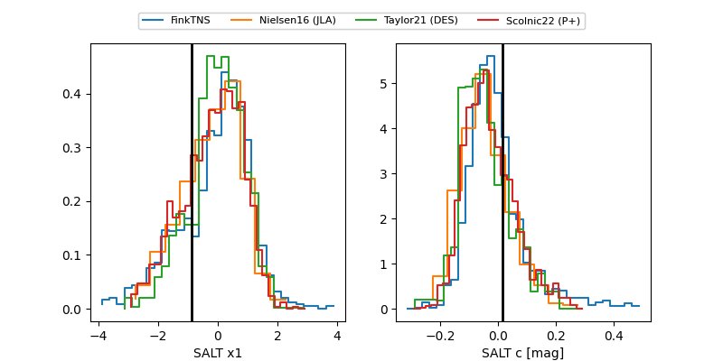

2026eiw
Target 2026eiw at 2026-02-27 11:23
Aliases and brokers:
FINK: link
Lasair: link
ALeRCE: link
TNS: link
YSE: link
alt names
ZTF26aahqhup (ztf,fink_ztf)
2026eiw (tns,yse)
Coordinates:
equatorial (ra, dec) = 182.5375,-16.70009
equatorial (HMS+DMS) = 12:10:08.99,-16:42:00.32
galactic (l, b) = (288.8748,+45.04176)
Flags:
Photometry:
last ztfg=19.39, ztfr=19.38
1 ztfg, 1 ztfr detections
Lightcurve

Visibility


Additional plots
